JUC并发的AOV和JMM

本文还有xmind图解，点击下载：并发编程的AOV.xmind
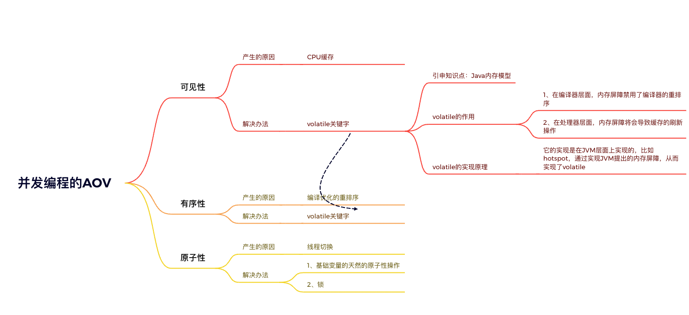CPU缓存带来的可见性问题
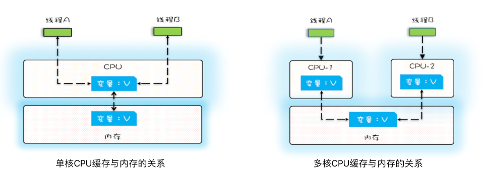一个线程对共享变量的修改，另外一个线程能够立刻看到，我们称为可见性。
- 在以前单核CPU的情况下，CPU只有一个缓存，所以多个线程同时修改一个变量是不会有可见性问题的
- 在目前多核CPU的情况下，每一个核心都会有一个缓存， 对变量的修改保存在当前核心的缓存中，另一个核心就无法可见，所以就会存在可见性的问题。
- 用一段代码来验证一下多核场景下的可见性问题。下面的代码，每执行一次 add10K() 方法，都会循环 10000 次 count+=1 操作。在 calc() 方法中我们创建了两个线程，每个线程调用一次 add10K() 方法，我们来想一想执行 calc() 方法得到的结果应该是多少呢？
public class Test {
private long count = 0;
private void add10K() {
int idx = 0;
while(idx++ < 10000) {
count += 1;
}
}
public static long calc() {
final Test test = new Test();
// 创建两个线程，执行add()操作
Thread th1 = new Thread(()->{
test.add10K();
});
Thread th2 = new Thread(()->{
test.add10K();
});
// 启动两个线程
th1.start();
th2.start();
// 等待两个线程执行结束
th1.join();
th2.join();
return count;
}
}- 在多核CPU的环境下，返回的结果是：10000 到 20000 之间的随机数。
线程切换带来的原子性问题
我们把一个或者多个操作在 CPU 执行的过程中不被中断的特性称为原子性。也就是要么全部成功，要么全部失败。
Java 并发程序都是基于多线程的，自然也会涉及到线程切换，但是不可控的在于：我们无法控制CPU切换的时间点。就会导致一些很诡异的问题；
举个例子：count=0；启动两个线程都执行count+=1；你以为的结果是2，实际上结果可能是1，还可能是2；
这是因为，count+=1 这行代码对操作系统来说，对应三个汇编指令：
指令 1：首先，需要把变量 count 从内存加载到 CPU 的寄存器；
指令 2：之后，在寄存器中执行 +1 操作；
指令 3：最后，将结果写入内存（缓存机制导致可能写入的是 CPU 缓存而不是内存）。
而在多线程环境下，CPU切换的时间点是不可控的，所以就会出现下面的情况
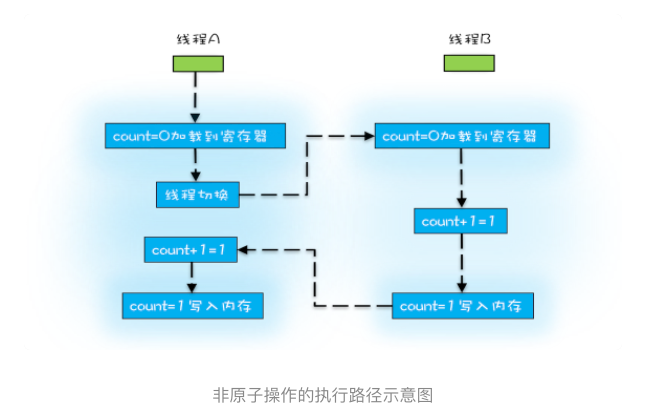编译优化带来的有序性问题
编译器为了优化性能，有时候会改变程序中语句的先后顺序，例如程序中：“a=6；b=7；”编译器优化后可能变成“b=7；a=6；”，在这个例子中，编译器调整了语句的顺序，但是不影响程序的最终结果。不过有时候编译器及解释器的优化可能导致意想不到的 Bug。
下面看一个经典案例：双重检查创建单例对象
public class Singleton {
static Singleton instance;
static Singleton getInstance(){
if (instance == null) {
synchronized(Singleton.class) {
if (instance == null)
instance = new Singleton();
}
}
return instance;
}
}以上代码在多线程情况下，会出现什么问题呢？
出在 new 操作上，我们以为的 new 操作应该是：
- 分配一块内存 M；
- 在内存 M 上初始化 Singleton 对象；
- 然后 M 的地址赋值给 instance 变量。
但是实际上优化后的执行路径却是这样的：
- 分配一块内存 M；
- 将 M 的地址赋值给 instance 变量；
- 最后在内存 M 上初始化 Singleton 对象。
所以就有可能导致在将地址赋值给instance之后，没有创建对象，此时线程切换了。就会导致返回的instance实例是null，进而引发NPE；
问：什么时候会重排序？
答：在编译器与CPU处理器中都能执行指令重排优化操作。
问：A如果没有完成实例的初始化，锁应该不会释放的，B是拿不到锁的，怎么还会出问题呢？
答：CPU时间片切换后，线程B刚好执行到第一次判断instance==null，此时不为空（分配了地址，只是没有初始化），不用进入synchronized里，就将还未初始化的instance返回了
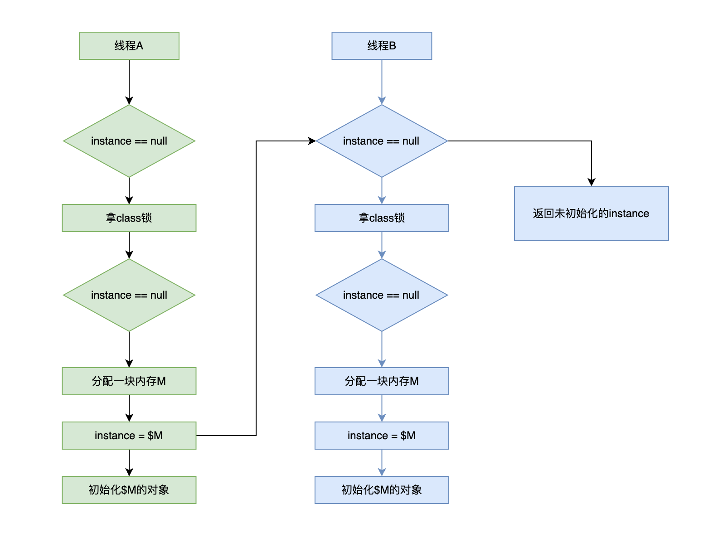特意提到缓存导致的可见性问题，线程切换带来的原子性问题，编译优化带来的有序性问题，其实缓存、线程、编译优化的目的和我们写并发程序的目的是相同的，都是提高程序性能。但是技术在解决一个问题的同时，必然会带来另外一个问题，所以在采用一项技术的同时，一定要清楚它带来的问题是什么，以及如何规避。
怎么解决可见性和有序性问题
我们知道可见性是由于CPU缓存的存在导致的，有序性是由于编译优化导致的，要想解决这两个问题，最简单的思路就是
- 禁用CPU缓存和编译优化
是的，只需要禁用，我们就可以解决可见性和有序性，但是随之而来的问题就是：
- 系统的性能直线下降
很显然这不是我们想要的，那怎么办呢？
- 合理的禁用CPU缓存和编译优化（意思就是：只在需要禁用的时候禁用）
那么，什么时候是需要禁用的时候呢？
- 其实就是指按照程序员的要求来禁用
既然要禁用CPU缓存和编译优化，而且还是需要程序员主观的判断控制，那就需要为程序员提供
- 提供给程序员按需禁用缓存和编译优化的方法
这个方法就是：
- Java内存模型（JMM）
Java内存模型（JMM）
这一小部分有一个思维导图，点击下载思维导图文件：Java内存模型.xmind
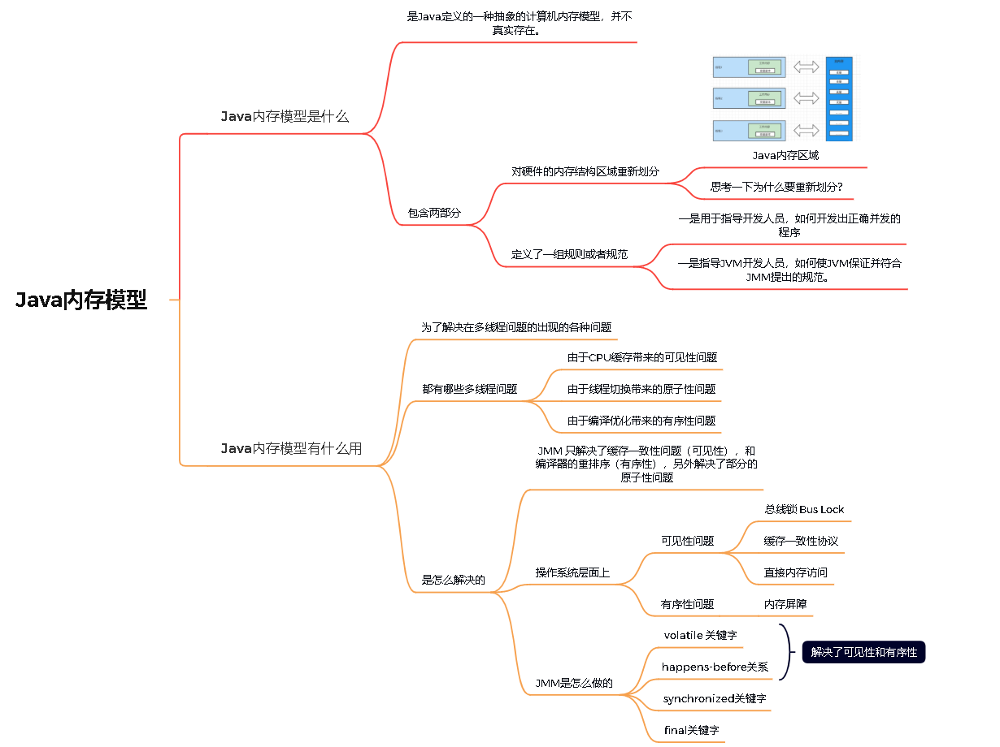什么是Java内存模型
Java内存模型（JMM）是Java定义的一种抽象的计算机内存模型，并不真实存在。它描述的一组规则或者规范。通过这些规则、规范定义了程序中各个变量的访问方式。从而解决在多线程环境下可能出现的问题。
多线程环境下都有哪些问题
这个标题也可以理解为：为什么要引入JMM？
现代计算机体系大部是采用的对称多处理器的体系架构。每个处理器均有独立的寄存器组和缓存，寄存器组和缓存中保存的同一个变量的值可能是不同的，这就会导致缓存一致性问题（可见性）。另外多个处理器可同时执行同一进程中的不同线程，这里称为处理器的乱序执行（原子性）。此外，编译器为了提高性能，会对指令进行优化，导致顺序发生变化，如果任由编译器或处理器对这些访问进行优化的话，很有可能出现无法想象的问题，这里称为编译器的重排序（有序性）。除了缓存一致性问题、处理器的乱序执行、编译器的重排序，还有内存系统的重排序。
因此Java语言规范引入了JMM，通过定义多项规则对编译器和处理器进行限制，解决这三个问题。
怎么解决这些问题的
但是 JMM 只解决了缓存一致性问题（可见性），和编译器的重排序（有序性），另外解决了部分的原子性问题
在描述 JMM 是怎么解决这些问题之前，我们先看一下原理，也就是在操作系统上，是怎么解决这些问题的。
操作系统层面上是怎么解决的
在操作系统层面上，缓存一致性问题的解决办法：
- 总线锁 Bus Lock，性能极低，是CPU和硬件层面的
- 直接内存访问 Direct Memory Access ，简称DMA，是一种硬件设备，绕过处理器直接访问内存
- 缓存一致性协议 Cache Coherence Protocol，比如Intel公司提出的 MESI 协议，是CPU层面的
在操作系统层面上，并没有解决原子性。
- 因为操作系统执行的是指令，对于任意一个指令来说肯定是原子性的。但是很多情况下我们的一行代码可能对应多行指令：如
i+=1
在操作系统层面上，编译器的重排序的解决办法：
- 内存屏障 Memory Barrier，是操作系统和硬件层面的，通过在CPU指令前后加上屏障，避免重排序
上面说了在操作系统层面，那么回到Java语言上来，JMM是怎么解决的呢？
JMM是怎么解决这些问题的
JMM 对内存区域重新划分，分为：主内存和工作内存。每个线程运行时，都会创建一个工作内存（也叫栈空间），来保存线程所有的私有变量。而JMM规范中规定所有的变量都存储在主内存中，而主内存中的变量是所有的线程都可以共享的，而对主内存中的变量进行操作时，必须在线程的工作内存进行操作，首先将主内存的变量copy到工作内存，进行操作后，再将变量刷回到主内存中。所有线程只有通过主内存来进行通信。
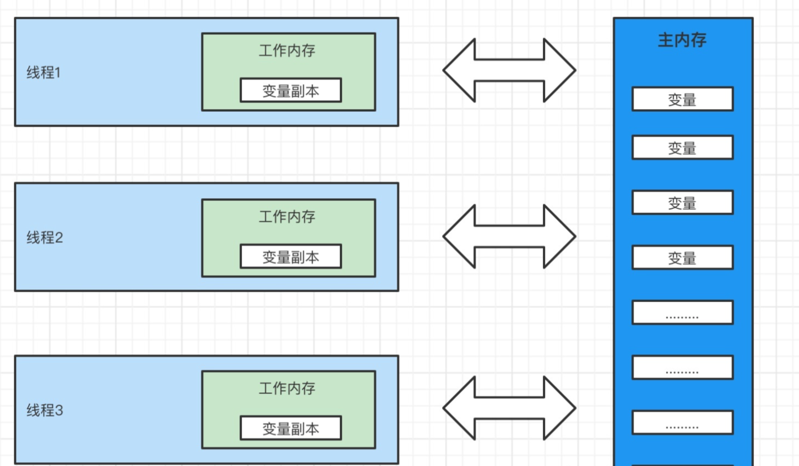为什么要对内存区域重新划分呢？
最主要的原因还是为了实现JVM的跨平台，举个例子，内存屏障的实现在不同的CPU架构上是不同的，甚至指令都不一样，而Java是跨平台的，必然不能直接使用，所以中间加了一层自己的内存结构并制定了自己的内存屏障规范。另外，有了自己的内存结构之后，就可以完美的配合JMM提出的 volatile 关键字，synchronized关键字，final关键字，happens-before关系这些规范了。
JMM对内存区域进行了重新划分，和硬件层面上的内存架构有什么关系呢？
多线程的执行最终是映射到硬件层面，通过硬件上的处理器进行执行，但java内存模型跟硬件内存架构并不完全一致。对于硬件内存架构来说，只有寄存器、缓存行、主内存的概念，并没有工作内存（私有内存区域）、主内存（堆内存）之分。也就是说JMM的内存划分对硬件内存架构并没有什么影响，因为JMM是一种抽象的概念，是一种规范，并不实际存在。对于硬件内存来说，不管是工作内存，还是主内存，都是储存在寄存器、缓存行、主内存中，JMM与硬件内存架构是一种相互交叉的关系，是一种抽象概念划分与真实物理硬件的交叉。（注意对于JVM内存区域划分一样）。
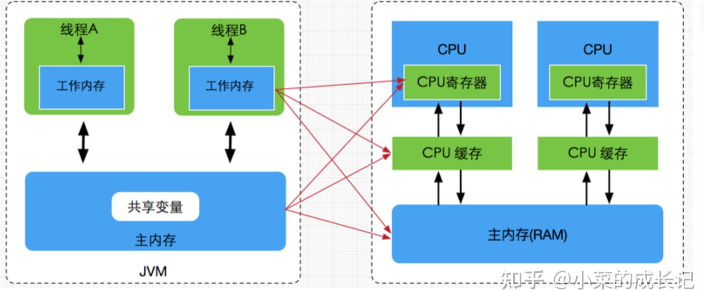JMM是通过 volatile 关键字来解决可见性和有序性的。
- 是的，你没有看错，volatile 一个关键字就可以解决两个问题。
- 原理就是：volatile 关键字用来实现内存屏障(memory barrier)，从而禁止重排序的，即时编译器根据具体的底层体系架构，将这些内存屏障替换成具体的 CPU 指令
- 1、对于编译器而言，内存屏障将限制它所能做的重排序优化。从而解决了有序性问题
- 2、而对于处理器而言，内存屏障将会导致缓存的刷新操作。从而解决了可见性问题。
对于原子性，JMM并没有保证原子性，在Java中是用锁来实现的原子性，后面会详细展开说。
JMM不仅仅提供了上面这些，还有：volatile 关键字，synchronized关键字，final关键字，happens-before关系来解决在多线程环境下出现的问题。
Java内存模型的官方文档
官方文档：Chapter 17. Threads and Locks (oracle.com)，这篇文章是Java语言规范（Java Language Specification）的第17章，主要讲解Java内存模型（Java Memory Model，JMM）的相关内容。
具体来说，该章节介绍了
- Java内存模型的定义和作用；
- Java内存模型中的原子性、可见性、有序性等概念；
- 如何使用synchronized、volatile、final等关键字来实现线程安全的编程；
- Java内存模型中的happens-before关系、同步块和同步方法的语义、volatile变量的语义等概念；
- 如何避免Java内存模型中的常见问题，如死锁、饥饿等。
文章中详细介绍了Java内存模型的各种概念和规则，并提供了相关的例子和解析，让读者能够更加深入地理解Java内存模型的实现原理和使用方法，从而编写出高效、正确且线程安全的Java程序。
Java内存模型的总结
Java 内存模型是个很复杂的规范，可以从不同的视角来解读，站在我们这些程序员的视角，本质上可以理解为，Java 内存模型规范了 JVM 如何提供按需禁用缓存和编译优化的方法。具体来说，这些方法包括 volatile、synchronized 和 final 三个关键字，以及六项 Happens-Before 规则
Happens-Before 规则
不用去背，没啥意思，如果有面试官问这个，就是LOW
只靠sychronized和volatile关键字来保证原子性、可见性以及有序性，那么编写并发程序可能会显得十分麻烦，幸运的是，从JDK 5开始，Java使用新的JSR-133内存模型，提供了happens-before 原则来辅助保证程序执行的原子性、可见性以及有序性的问题，它是判断数据是否存在竞争、线程是否安全的依据，happens-before 原则内容如下：
| 原则 | 解释 |
|---|---|
| 程序顺序原则 | 在一个线程内必须保证语义串行性，也就是说按照代码顺序执行。 |
| 锁规则 | 解锁(unlock)操作必然发生在后续的同一个锁的加锁(lock)之前，也就是说，如果对于一个锁解锁后，再加锁，那么加锁的动作必须在解锁动作之后(同一个锁)。 |
| volatile规则 | volatile变量的写，先发生于读，这保证了volatile变量的可见性，简单的理解就是，volatile变量在每次被线程访问时，都强迫从主内存中读该变量的值，而当该变量发生变化时，又会强迫将最新的值刷新到主内存，任何时刻，不同的线程总是能够看到该变量的最新值。 |
| 传递性 | A先于B ，B先于C 那么A必然先于C |
| 线程启动规则 | 线程的start()方法先于它的每一个动作，即如果线程A在执行线程B的start方法之前修改了共享变量的值，那么当线程B执行start方法时，线程A对共享变量的修改对线程B可见 |
| 线程终止规则 | 线程的所有操作先于线程的终结，Thread.join()方法的作用是等待当前执行的线程终止。假设在线程B终止之前，修改了共享变量，线程A从线程B的join方法成功返回后，线程B对共享变量的修改将对线程A可见。 |
| 线程中断规则 | 对线程 interrupt()方法的调用先行发生于被中断线程的代码检测到中断事件的发生，可以通过Thread.interrupted()方法检测线程是否中断。 |
| 对象终结规则 | 对象的构造函数执行，结束先于finalize()方法 |
两个操作之间具有happens-before关系，并不意味着前一个操作必须要在后一个操作之前执行！happens-before仅仅要求前一个操作（执行的结果）对后一个操作可见，且前一个操作按顺序排在第二个操作之前（the first is visible to and ordered before the second）。happens-before的定义很微妙，后文会具体说明happens-before为什么要这么定义。——来自《Java并发编程的艺术》
Happens-Before与JMM的关系
一个happens-before规则对应于一个或多个编译器和处理器重排序规则。对于Java程序员来说，happens-before规则简单易懂，它避免Java程序员为了理解JMM提供的内存可见性保证而去学习复杂的重排序规则以及这些规则的具体实现方法。
简单理解就是：JMM帮我们封装好了。
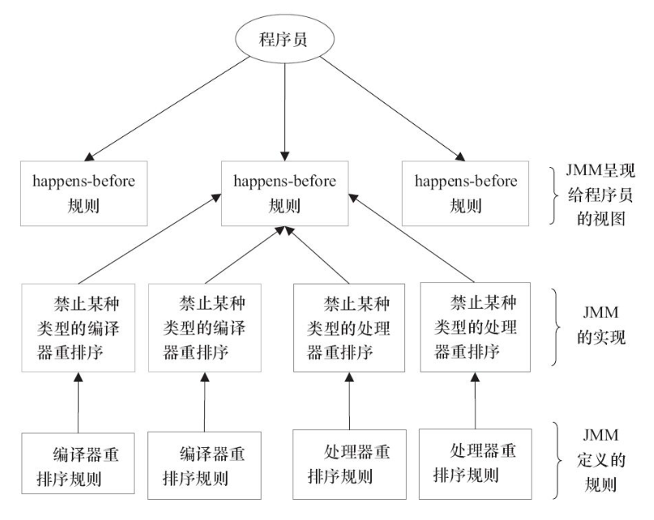volatile关键字的实现原理
通过本文前面，我们知道 volatile 关键字有两个作用
1、在编译器层面，内存屏障禁用了编译器的重排序，保证了有序性；
2、在处理器层面，内存屏障将会导致缓存的刷新操作，保证了可见性。
那么，volatile 关键字到底是怎么实现这些功能的呢？
- 那就涉及到内存屏障了。
内存屏障
内存屏障在处理器层面，是一种特殊指令。处理器执行的时候看到这种指令，必须保证这个指令前的操作执行完，只能执行后面的；
在处理器层面：这些指令包括：ifence，sfence，mfence（Intel的CPU的特有指令，不同的CPU指令可能不一样）
在JVM层面：由于JVM是跨平台的，所以JVM规定了自己的内存屏障：LoadLoadBarrier，LoadStoreBarrier，StoreStoreBarrier，StoreLoadBarrier。那么所有实现JVM规范的虚拟机，比如hotspot，都必须实现这四个屏障。
volatile关键字和内存屏障有啥关系呢
volatile 只是一个关键字，它只能简单的用来修饰一个变量，或者说，标记一块内存区域地址；
那么，它和顺序有啥关系呢？为啥说使用 volatile 修饰的变量就可以禁止重排序呢？
举个例子来说
public class VolatileExample {
private volatile int count = 0;
public void set() {
count++;
}
public int get() {
return count;
}
}set 方法是写，而且要写的变量是 count，而 count 使用了 volatile 进行修饰。说明 set 方法是一个 volatile写 操作；
get 方法是读，而且要读的变量是 count，而 count 使用了 volatile 进行修饰，说明 get 方法是一个 volatile读 操作；
对于 volatile写 操作，在JVM层面上，会添加如下内存屏障
-----StoreStoreBarrier----
【volatile写 操作】
-----StoreLoadBarrier----对于 volatile读 操作，在JVM层面上，会添加如下内存屏障
【volatile读 操作】
-----LoadLoadBarrier----
-----LoadStoreBarrier----那么是什么意思呢：
- 对于 volatile写 操作
- StoreStoreBarrier表示：在当前线程写这块内存区域之前，所有别的线程对这块内存要做的写操作都必须先完成。
- StoreLoadBarrier表示：在当前线程写完这块区域之后，所有别的线程对这块内存的读操作才可以开始。
- 对于 volatile读 操作
- LoadLoadBarrier表示：在当前线程读完这块内存区域之后，所有别的线程对这块内存区域的读操作才可以开始。
- LoadStoreBarrier表示：在当前线程读完这块内存区域之后，所有别的线程对这块内存区域的写操作才可以开始。
内存屏障和重排序有啥关系呢？
关系很简单。
我们知道，在编译器和CPU处理器中都有可能导致指令的重排序。
那么在编译器和CPU处理器中，当遇到内存屏障的相关指令，就不在排序，这就避免了重排序；
既然不再排序了。那么最终生成的机器码就是正确的。
内存屏障和可见性有啥关系呢？
关系也很简单，这是在JMM层面和CPU层面都做的优化。
我们知道JMM对计算机系统的内存区域重新划分了区域。分为了工作内存和主存。
一个变量被volatile修饰的时候，在系统运行期间，会遇到这个变量的内存屏障，然后：
- 如果要对这个变量进行写操作，会先在工作内存中写，由于内存屏障的存在，还会在继续做两个操作
- 1、实时的同步到主存中；
- 2、通知其他CPU核心，你们缓存中的数据已经失效了。
- 如果要对这个变量进行读操作，由于内存屏障的存在
- 不会从缓存中拿，而是实时的去主存中拿
这样，就解决了可见性。
volatile的原理总结
- 代码层面：程序员用 volatile 修饰一个变量
volatile i- 编译器层面：编译成字节码的时候，对使用 volatile 关键字的变量，会使用 ACC_VOLATILE 修饰
ACC_VOLATILE i- JVM层面：JVM执行字节码的时候，遇到 ACC_VOLATILE 就会添加内存屏障
-----StoreStoreBarrier----
【volatile写 操作】
-----StoreLoadBarrier----
【volatile读 操作】
-----LoadLoadBarrier----
-----LoadStoreBarrier----
屏障两边的指令不可以重排！保障有序！- hotspot层面
// bytecodeinterpreter.cpp
int field_offset = cache->f2_as_index();
if (cache->is_volatile()) {
if (support_IRIW_for_not_multiple_copy_atomic_cpu) {
OrderAccess::fence();
}
---------------------------------------------------------------------
//orderaccess_linux_x86.inline.hpp
inline void OrderAccess::fence() {
if (os::is_MP()) {
// always use locked addl since mfence is sometimes expensive
#ifdef AMD64
__asm__ volatile ("lock; addl $0,0(%%rsp)" : : : "cc", "memory");
#else
__asm__ volatile ("lock; addl $0,0(%%esp)" : : : "cc", "memory");
#endif
}
}
------------------------------------------------------------------------
//主要是调用CPU指令：ifence，sfence，mfence实现内存屏障怎么解决原子性问题
原子性问题的一个经典面试题就是：为什么在 32 位的机器上对 long 型变量进行加减操作存在并发隐患
要解决这个问题，就要知道为什么会发生原子性问题。
原子性问题的产生原因就是因为：高级编程语言的一行代码可能对应多个CPU指令，以在 32 位的机器上对 long 型变量进行加减操作为例，分为两步：第一步：写高32位；第二步：写低32位；而CPU在执行的时候是可能发生线程切换的，导致出现了原子性出现问题。
那么知道了原因，那就好解决了。
- 禁止线程切换，保证当前线程一直继续执行下去不就好了。
在早期CPU只是单核的情况下，禁止线程切换，可以保证我们的代码只被一个核心的一个线程执行持续执行。问题可以得到解决。
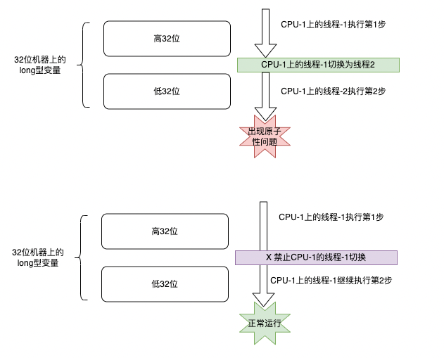但是目前CPU都是多核的。也就是意味着我们的一行代码对应的多个CPU指令，可能是不同的核心的不同线程执行的。
在多核CPU情况下，我们禁止线程切换，只能保证当前核心的当前线程持续执行，但是我们的代码被分散到了多个核心上。所以是没有用的。
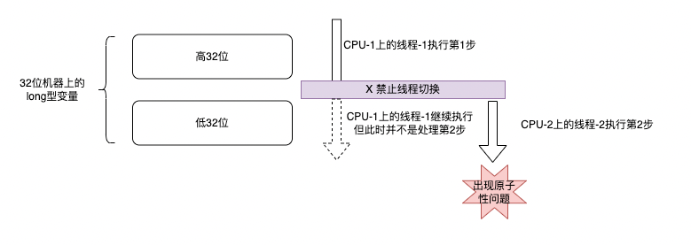那怎么办呢？
- 我们只需要保证同一时刻只有一个线程在执行，就可以解决问题。
“同一时刻只有一个线程执行”这个条件非常重要，我们称之为互斥。如果我们能够保证对共享变量的修改是互斥的，那么，无论是单核 CPU 还是多核 CPU，就都能保证原子性了。
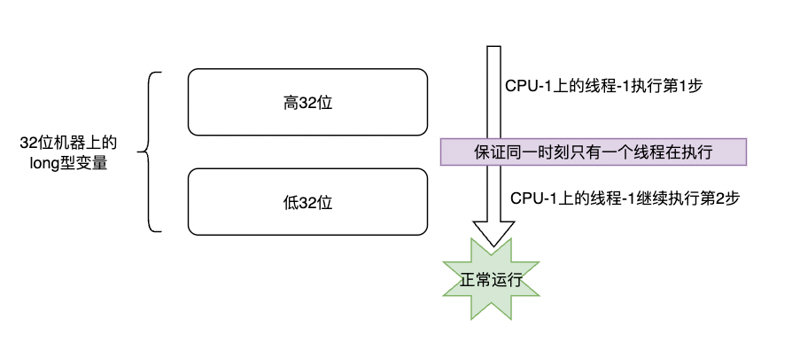具体是怎么保证“同一时刻只有一个线程在执行的”
- 就是怎么保证互斥，当然是：锁了。
那么java给我们程序员提供的工具就是：
- 锁
锁这部分的内容很多，包括 synchronized，Lock，无锁CAS等，这部分单独抽一篇说。
参考《JUC并发的锁》